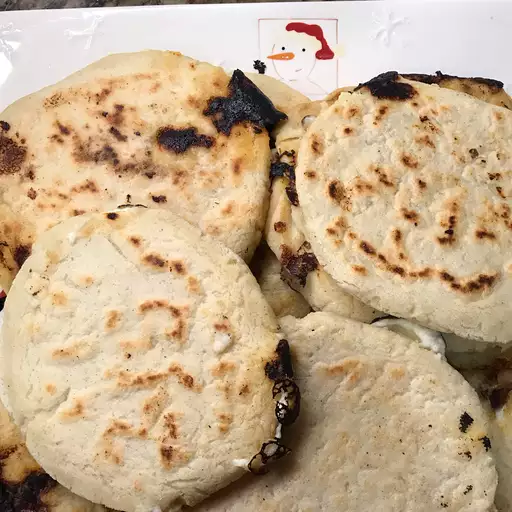

Basic Cheese Pupusas

Pupusas
A popular food in El Salvador. A thick corn tortilla filled with cheese and easy to customize.
Serve topped with curtido (pickled cabbage) or eat them plain. My ex-boyfriend's Salvadorean
mother's recipe!
Ingredients
For the curtido
- 2 cups shredded green cabbage
- ½ cup apple cider vinegar
- ½ cup water, or more as needed
- ½ onion, thinly sliced
- 1 carrot, grated
- ¼ teaspoon ground oregano
- ¼ teaspoon red pepper flakes
- salt to taste
For the pupusa dough
- 3 cups masa harina flour (Mexican corn masa mix)
- 1 ½ cups water, or more as needed
- ½ teaspoon salt
For the pupusa filling
- 1 cup ricotta cheese
- 1 cup shredded mozzarella cheese
- 2 tablespoons heavy whipping cream, or more to taste
- 1 scallion, finely chopped, or more to taste
- cooking spray
Steps
- Bring a large pot of lightly salted water to a boil. Add cabbage and cook uncovered until
slightly softened, about 3 minutes. Drain in a colander and immediately immerse in ice water
for several minutes to stop the cooking process. Drain.
- Mix cabbage, apple cider vinegar, water, onion, carrot, oregano, red pepper flakes,
and 1 pinch salt together in a large bowl. Refrigerate until flavors combine,
8 hours to overnight.
- Combine masa harina, water, and 1/2 teaspoon salt together in a large bowl; knead until
a smooth, moist dough forms. Add water if dough cracks when you press down on it.
Let dough rest, 5 to 10 minutes.
- Stir ricotta cheese, mozzarella cheese, heavy cream, and scallion together in a bowl to make
a paste.
- Divide dough into 8 balls. Press your thumb into the center of each ball to form an
indentation. Fill indentations with ricotta cheese paste. Pinch edges together around the
filling; flatten and smooth into round 1/4 inch-thick patties between your palms.
- Grease a skillet with cooking spray; preheat over medium heat. Cook pupusas in batches
until browned, 2 to 3 minutes per side.
- Drain cabbage mixture and serve alongside pupusas.
Click here to go back home